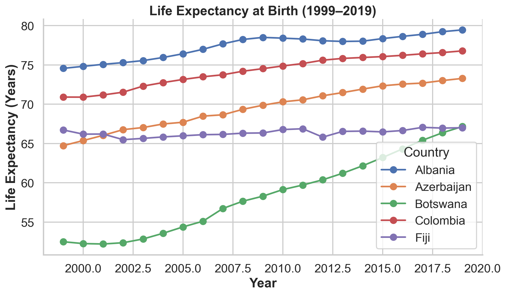
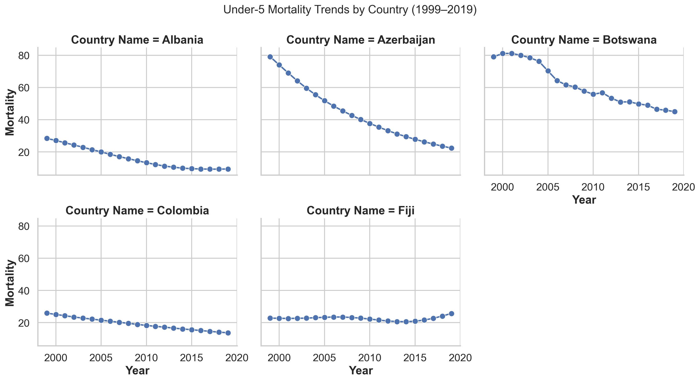
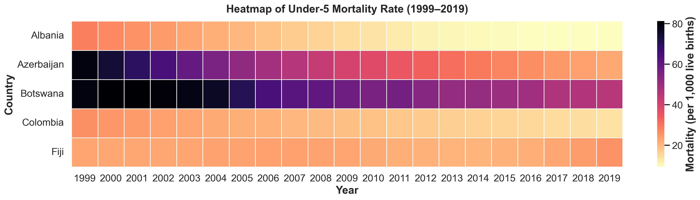
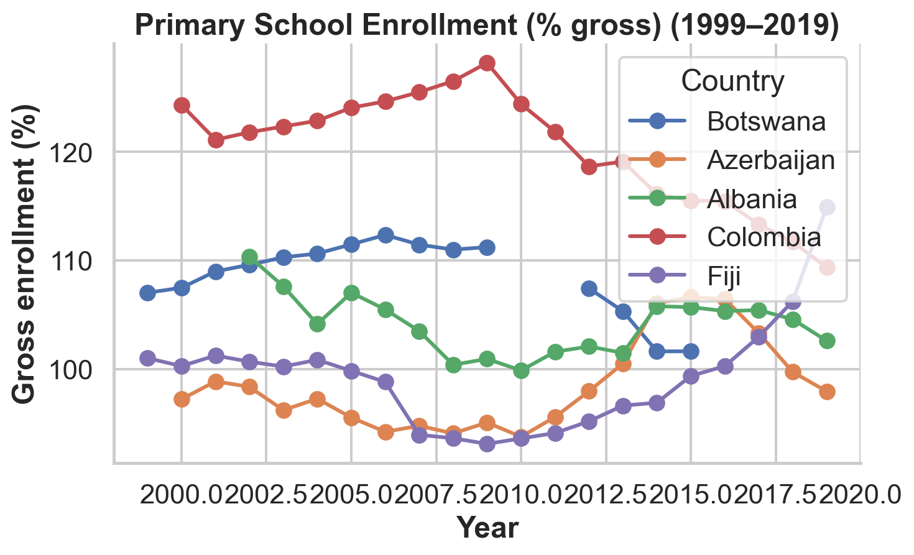
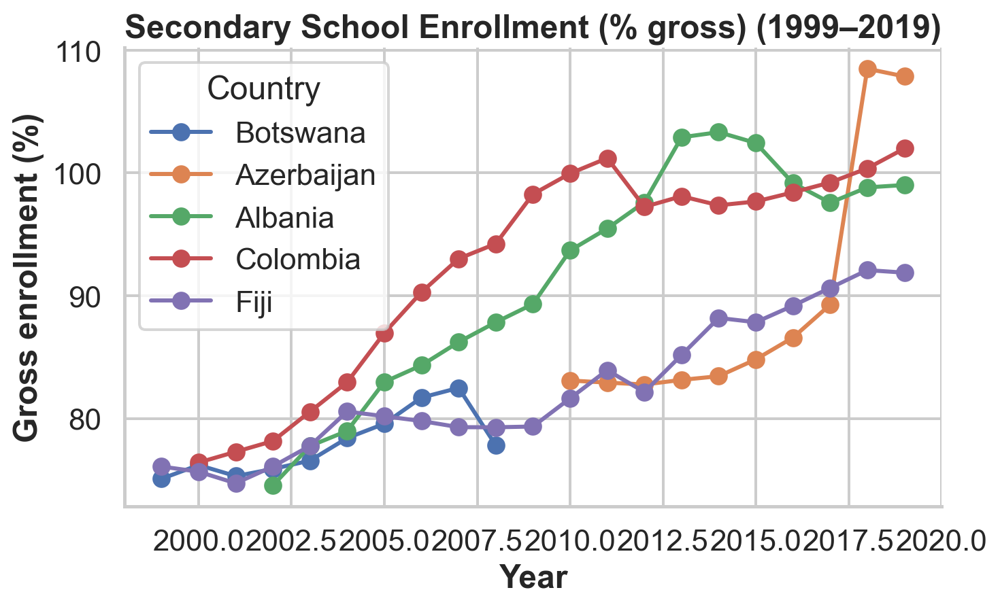
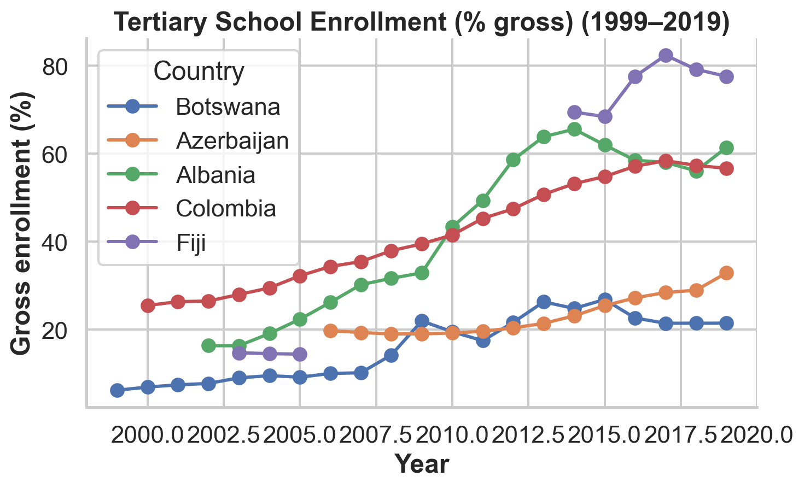

import os
import numpy as np
import pandas as pd
import matplotlib
import matplotlib.pyplot as plt
import seaborn as snsQTM 350 Final Project
Group Members and Emory IDs: Chang Liu(2579008), Emily Liu(2550121), Sally Shen(2549393), Tristan Yang (2592886), Sherry Zhang(2593324)
Introduction
Description of topic and research question
How does quality of life evolve in countries that start at similar income levels but are located in very different parts of the world? To answer this question, we study five countries that had comparable GDP per capita around 1999 yet span five continents: Albania (Europe), Azerbaijan (Asia), Botswana (Africa), Colombia (South America), and Fiji (Oceania). By following these countries over the period 1999–2019, we can observe whether their trajectories converge or diverge as they experience distinct political, demographic, and policy environments.
Using the World Bank’s World Development Indicators (WDI), we assess quality of life along two broad dimensions. First, we examine economic and health outcomes, focusing on the employment rate, life expectancy at birth, and under-5 mortality rate. These indicators capture both the material conditions of households and basic population health. Second, we analyze education coverage, measured through primary, secondary, and tertiary gross enrollment rates. Education reflects not only current welfare but also future human capital and growth potential.
Summary of main findings
Five countries with similar 1999 GDP per capita diverged substantially by 2019. Employment declined in Azerbaijan but improved in Albania. Life expectancy rose universally, with Botswana gaining 14+ years. Under-5 mortality fell across all nations. Education expansion varied dramatically: tertiary enrollment surged to 60–80% in Albania, Colombia, and Fiji, but grew modestly in Botswana and Azerbaijan. These findings demonstrate that comparable initial income does not guarantee similar development outcomes.
Data Description
Importing useful libraries
Dataset introduction and context
The dataset used in this project is the World Development Indicators (WDI) from the World Bank, a comprehensive collection of more than 1,600 indicators across 200+ countries from 1960–2023. The WDI dataset enables cross‑country comparisons and long‑run development analysis.
Data merging & cleaning
This code demonstrates a data merging and cleaning pipeline for World Bank indicators across five countries (1999–2019). The load_and_melt() function standardizes each CSV into long format, filtering countries early to improve efficiency. Multiple datasets are then merged on common keys (Country Name, Country Code, Year) using outer joins to preserve all data points.
This step is important because proper merging and cleaning ensures data consistency, prevents missing values from causing analysis errors, and establishes reproducible workflows. By using clear constants, modular functions, and explicit filtering steps, the code remains maintainable and verifiable—critical for reliable statistical analysis.
# Importing original World Bank Dataset from the website
PRIMARY_FILE = "data/API_SE.PRM.ENRR_DS2_en_csv_v2_4680.csv"
SECONDARY_FILE = "data/API_SE.SEC.ENRR_DS2_en_csv_v2_4735.csv"
TERTIARY_FILE = "data/API_SE.TER.ENRR_DS2_en_csv_v2_3421.csv"
MORTALITY_FILE = "data/API_SH.DYN.MORT_DS2_en_csv_v2_6199.csv"
LIFEEXP_FILE = "data/API_SP.DYN.LE00.IN_DS2_en_csv_v2_2505.csv"
GDP_PC_FILE = "data/API_NY.GDP.PCAP.KD_DS2_en_csv_v2_2624.csv"
EMP_RATE_FILE = "data/API_SL.EMP.TOTL.SP.ZS_DS2_en_csv_v2_4653.csv"
OUTPUT_DIR = "data"
OUTPUT_FILE = os.path.join(OUTPUT_DIR, "living_standards_5countries_1999_2019.csv")
START_YEAR = 1999
END_YEAR = 2019
YEAR_COLS = [str(y) for y in range(START_YEAR, END_YEAR + 1)]
# Restrict to your 5 project countries
TARGET_COUNTRIES = ["Botswana", "Azerbaijan", "Albania", "Colombia", "Fiji"]
def load_and_melt(path: str, value_name: str) -> pd.DataFrame:
"""
Load a World Bank CSV (single indicator), keep 1999–2019,
and return a long DataFrame with:
Country Name, Country Code, Year, <value_name>
"""
df = pd.read_csv(path, skiprows=4)
cols = ["Country Name", "Country Code"] + YEAR_COLS
df = df[cols].copy()
# Restrict to the 5 target countries as early as possible
df = df[df["Country Name"].isin(TARGET_COUNTRIES)].copy()
long_df = df.melt(
id_vars=["Country Name", "Country Code"],
value_vars=YEAR_COLS,
var_name="Year",
value_name=value_name
)
long_df["Year"] = long_df["Year"].astype(int)
return long_df
def main():
# ----- Load each indicator for the 5 countries -----
primary_long = load_and_melt(PRIMARY_FILE, "primary_enrollment_gross")
secondary_long = load_and_melt(SECONDARY_FILE, "secondary_enrollment_gross")
tertiary_long = load_and_melt(TERTIARY_FILE, "tertiary_enrollment_gross")
mortality_long = load_and_melt(MORTALITY_FILE, "under5_mortality_per_1000")
lifeexp_long = load_and_melt(LIFEEXP_FILE, "life_expectancy_years")
gdp_pc_long = load_and_melt(GDP_PC_FILE, "gdp_per_capita_constant_2015usd")
emp_rate_long = load_and_melt(EMP_RATE_FILE, "employment_rate_percent")
# ----- Merge into one panel (5 countries × 1999–2019) -----
merged = (
primary_long
.merge(secondary_long, on=["Country Name", "Country Code", "Year"], how="outer")
.merge(tertiary_long, on=["Country Name", "Country Code", "Year"], how="outer")
.merge(mortality_long, on=["Country Name", "Country Code", "Year"], how="outer")
.merge(lifeexp_long, on=["Country Name", "Country Code", "Year"], how="outer")
.merge(gdp_pc_long, on=["Country Name", "Country Code", "Year"], how="outer")
.merge(emp_rate_long, on=["Country Name", "Country Code", "Year"], how="outer")
.sort_values(["Country Name", "Year"])
.reset_index(drop=True)
)
# Safety: enforce filter again in case any extra slipped through
merged = merged[merged["Country Name"].isin(TARGET_COUNTRIES)].copy()
# ----- Save -----
os.makedirs(OUTPUT_DIR, exist_ok=True)
merged.to_csv(OUTPUT_FILE, index=False)
print(f"Saved merged 5-country dataset to: {OUTPUT_FILE}")
print(f"Shape: {merged.shape}")
print(merged.head())
if __name__ == "__main__":
main()Saved merged 5-country dataset to: data/living_standards_5countries_1999_2019.csv
Shape: (105, 10)
Country Name Country Code Year primary_enrollment_gross \
0 Albania ALB 1999 NaN
1 Albania ALB 2000 NaN
2 Albania ALB 2001 NaN
3 Albania ALB 2002 110.338921
4 Albania ALB 2003 107.598259
secondary_enrollment_gross tertiary_enrollment_gross \
0 NaN NaN
1 NaN NaN
2 NaN NaN
3 74.538918 16.389561
4 77.751823 16.366240
under5_mortality_per_1000 life_expectancy_years \
0 28.4 74.568
1 27.1 74.826
2 25.7 75.083
3 24.3 75.299
4 22.9 75.557
gdp_per_capita_constant_2015usd employment_rate_percent
0 1841.807628 48.222
1 1991.914359 48.939
2 2188.918545 48.766
3 2297.108535 48.945
4 2428.689347 48.611 After merging and cleaning the dataset, the csv file is saved in the data folder and is ready to be used.
Summary of key variables (columns)
- Employment-to-population ratio is the share of the total population that is currently employed.
- Life expectancy at birth is the average number of years a newborn is expected to live if current mortality patterns remain constant over its lifetime.
- Under-five mortality rate is the probability (per 1,000 live births) that a newborn will die before reaching age five, given the mortality rates of that year.
- Primary gross enrollment ratio is total enrollment in primary education, regardless of age, expressed as a percentage of the official primary-school–age population.
- Secondary gross enrollment ratio is total enrollment in secondary education, regardless of age, expressed as a percentage of the official secondary-school–age population.
- Tertiary gross enrollment ratio is total enrollment in tertiary education, regardless of age, expressed as a percentage of the official tertiary-school–age population.
Data Analysis
Employment to population ratio, 15+, total (%)
This section visualizes employment rates from 1999-2019 across five countries using a line plot with markers for trend comparison.
# Import the dataset
df = pd.read_csv('data/living_standards_5countries_1999_2019.csv')
# Filter data for years 1999-2019
df_filtered = df[(df['Year'] >= 1999) & (df['Year'] <= 2019)]
# Get unique countries
countries = df_filtered['Country Name'].unique()
# Create the plot
plt.figure(figsize=(10, 6))
for country in countries:
country_data = df_filtered[df_filtered['Country Name'] == country]
# Sort by year to ensure correct line plotting
country_data = country_data.sort_values('Year')
plt.plot(country_data['Year'], country_data['employment_rate_percent'], label=country, marker='o')
# Add title and labels
plt.title('Employment Rate (1999-2019) for 5 Countries')
plt.xlabel('Year')
plt.ylabel('Employment Rate (%)')
# Add legend
plt.legend()
# Set x-axis ticks to ensure integer years are shown clearly
plt.xticks(sorted(df_filtered['Year'].unique()), rotation=45)
# Add grid
plt.grid(True)
# Save the plot
plt.tight_layout()
plt.show()
Botswana and Colombia maintained the highest overall employment rates. Botswana remained relatively stable, consistently around \(60\%-65\%\), while Colombia demonstrated a steady increase, climbing from approximately \(55\%\) to nearly \(60\%\) by 2019. In contrast, Albania and Azerbaijan started with the lowest rates, but their paths diverged sharply. Albania showed a strong positive trend, successfully increasing its employment rate from under \(50\%\) to over \(55\%\). Conversely, Azerbaijan followed a notable negative trajectory, with its rate consistently decreasing and dropping below \(50\%\) in the later years. Fiji’s employment rate remained relatively flat, hovering around the \(55\%\) mark. This pattern highlights that while most nations saw stable or improving labor market participation, Azerbaijan experienced a pronounced and consistent decline over the two-decade period.
Life expectancy at birth, total (years)
The code is intended to show how life expectancy has evolved across five countries from 1999 to 2019, using time-series and summary comparisons. It generates a line plot of yearly trends and a bar chart of overall improvement over a 20-year period to emphasize variations in long-term population health improvements.
# Load data
df = pd.read_csv("data/living_standards_5countries_1999_2019.csv")
# List of countries directly from dataset
countries = df["Country Name"].unique()
# Line Plot of Life Expectancy Over Time for Each Country
plt.figure(figsize=(10, 6))
for country in countries:
temp = df[df["Country Name"] == country]
plt.plot(
temp["Year"],
temp["life_expectancy_years"],
marker="o",
label=country
)
plt.title("Life Expectancy at Birth (1999–2019)")
plt.xlabel("Year")
plt.ylabel("Life Expectancy (Years)")
plt.legend(title="Country")
plt.tight_layout()
plt.show()
# Bar Plot: Improvement from 1999 to 2019
improvement_df = (
df[df["Year"].isin([1999, 2019])]
.pivot(index="Country Name", columns="Year", values="life_expectancy_years")
.reset_index()
)
# Calculate improvement
improvement_df["Improvement"] = improvement_df[2019] - improvement_df[1999]
plt.figure(figsize=(10, 6))
plt.bar(improvement_df["Country Name"], improvement_df["Improvement"], color="skyblue")
plt.title("Improvement in Life Expectancy (1999–2019)")
plt.xlabel("Country")
plt.ylabel("Years of Life Expectancy Gained")
plt.xticks(rotation=30)
plt.tight_layout()
plt.show()

The line plot of life expectancy from 1999 to 2019 demonstrates steady upward trends in all five countries, although the magnitudes and rates of improvement vary significantly. Albania and Colombia maintained the highest life expectancy throughout the period and showed consistent, moderate development. Azerbaijan likewise showed steady development, but at a significantly lower starting point compared to Albania and Colombia. Botswana had the most significant growth, starting with the lowest life expectancy in 1999 and rising rapidly, particularly in the mid-2000s, due to notable public health efforts such as expanded HIV/AIDS treatment. In contrast, Fiji experienced relatively little change and had the most consistent trajectory, indicating slower long-term improvements in population health.
The bar chart, which displays total improvement between 1999 and 2019, reinforces these trends. Botswana made the greatest improvement, extending life expectancy by more than 14 years, while Azerbaijan also made significant improvements, improving by roughly 8.5 years. Albania and Colombia experienced moderate growth, in keeping with their already high starting points. Fiji had the smallest growth, increasing by less than a year during the last two decades. These findings suggest that countries with lower starting life expectancy experienced the most fast improvement, while countries with higher baselines saw more slow, incremental advances.
Mortality rate, under-5 (per 1,000 live births)
The code loads the five-country dataset, selects the under-5 mortality variable, cleans the data, and visualizes trends from 1999–2019 using three figures: a multi-country line plot, a per-country FacetGrid, and a heatmap. These graphs highlight overall declines and cross-country differences in child mortality.
# ---- Styling ----
sns.set_theme(style="whitegrid", context="talk")
# Note: These rcParams set defaults, but specific figsize arguments
# in the plots below will override them.
plt.rcParams["axes.spines.top"] = False
plt.rcParams["axes.spines.right"] = False
plt.rcParams["axes.titleweight"] = "bold"
plt.rcParams["axes.labelweight"] = "bold"
# ====== 1. Load merged 5-country dataset ======
# Ensure this path is correct for your machine
FILE = "data/living_standards_5countries_1999_2019.csv"
try:
df_full = pd.read_csv(FILE)
except FileNotFoundError:
print(f"File not found at {FILE}. Please check the path.")
# Stop execution if data is missing to prevent errors below
df_full = pd.DataFrame()
if not df_full.empty:
# Filter for the 5 countries
countries = ["Botswana", "Azerbaijan", "Albania", "Colombia", "Fiji"]
df_full = df_full[df_full["Country Name"].isin(countries)].copy()
# Keep only the columns needed for these plots
df_long = df_full[["Country Name", "Year", "under5_mortality_per_1000"]].rename(
columns={"under5_mortality_per_1000": "Mortality"}
)
# Drop missing values and ensure Year is int
df_long = df_long.dropna(subset=["Mortality"])
df_long["Year"] = df_long["Year"].astype(int)
# Update country list based on actual data present
countries = df_long["Country Name"].unique().tolist()
years = sorted(df_long["Year"].unique())
# ====== 2. Multi-country line plot ======
palette = sns.color_palette("viridis", n_colors=len(countries))
fig, ax = plt.subplots(figsize=(15, 8))
for i, (country, group) in enumerate(df_long.groupby("Country Name")):
group = group.sort_values("Year")
ax.plot(
group["Year"], group["Mortality"],
label=country,
linewidth=2.5,
marker="o",
markersize=6,
alpha=0.9,
color=palette[i]
)
# Highlight start and end values
start_year = group["Year"].min()
end_year = group["Year"].max()
start = group.loc[group["Year"] == start_year, "Mortality"].iloc[0]
end = group.loc[group["Year"] == end_year, "Mortality"].iloc[0]
ax.text(start_year - 0.2, start + 1, f"{start:.1f}", color=palette[i])
ax.text(end_year + 0.2, end + 1, f"{end:.1f}", color=palette[i])
# Shade 2008–2009 global recession
if 2008 in years and 2009 in years:
ax.axvspan(2008, 2009, color="grey", alpha=0.15)
ax.set_title("Under-5 Mortality Rate (per 1,000 live births)\n1999–2019", fontsize=20)
ax.set_xlabel("Year")
ax.set_ylabel("Mortality per 1,000 live births")
ax.legend(title="Country", bbox_to_anchor=(1.04, 1), loc="upper left")
plt.tight_layout()
plt.show() # <--- Forces inline display
# ====== 3. FacetGrid by country ======
g = sns.FacetGrid(
df_long,
col="Country Name",
col_wrap=3,
sharey=True,
height=4,
aspect=1.3
)
g.map_dataframe(
sns.lineplot,
x="Year",
y="Mortality",
marker="o"
)
g.fig.suptitle("Under-5 Mortality Trends by Country (1999–2019)", y=1.05, fontsize=18)
plt.show() # <--- Forces inline display
# ====== 4. Heatmap (Country × Year) ======
heat_df = df_long.pivot(index="Country Name", columns="Year", values="Mortality")
plt.figure(figsize=(18, 5))
sns.heatmap(
heat_df,
cmap="magma_r",
linewidths=0.5,
linecolor="white",
cbar_kws={"label": "Mortality (per 1,000 live births)"},
)
plt.title("Heatmap of Under-5 Mortality Rate (1999–2019)", fontsize=18, pad=15)
plt.xlabel("Year")
plt.ylabel("Country")
plt.tight_layout()
plt.show()


Across all five countries, under-5 mortality declined between 1999 and 2019, but the speed and magnitude of improvement varied substantially. Azerbaijan experienced the steepest and most consistent reduction, falling from extremely high mortality levels to around 22 deaths per 1,000 by 2019, while Botswana—also starting very high—declined more slowly and showed mid-2000s fluctuations likely linked to the HIV/AIDS crisis. Albania and Colombia began with much lower mortality and steadily improved, with Albania ultimately reaching one of the lowest levels among the group. Fiji stands out as the only country without a clear downward trend: its mortality rate remained nearly flat for two decades and even rose slightly after 2015, suggesting stagnation in child-health progress despite having a GDP per capita similar to the others. Together, these results show that comparable economic levels do not guarantee similar health outcomes; country-specific health systems, social conditions, and historical factors shape very different trajectories in child survival.
Education
This section plots primary, secondary, and tertiary gross enrollment rates for our five countries from 1999–2019, interpolating only isolated missing years. The goal is to compare how education coverage at each level has evolved over time and how quickly different countries expanded access along the schooling pipeline.
def fill_isolated_nans(s: pd.Series) -> pd.Series:
"""
For a 1D series:
- If there is exactly ONE NaN between two non-NaNs, replace it
with the average of its neighbors.
- If there are 2+ consecutive NaNs, leave them as NaN.
- NaNs at the start or end are left as NaN.
"""
s = s.copy()
values = s.values
isnan = pd.isna(values)
n = len(values)
i = 0
while i < n:
if isnan[i]:
start = i
# find end of this NaN run
while i + 1 < n and isnan[i + 1]:
i += 1
end = i
length = end - start + 1
# isolated single NaN, not at edges, neighbors are non-NaN
if (
length == 1
and start > 0
and end < n - 1
and not isnan[start - 1]
and not isnan[end + 1]
):
values[start] = (values[start - 1] + values[end + 1]) / 2.0
isnan[start] = False # now filled
i += 1
return pd.Series(values, index=s.index)
# ---------------- data ----------------
df = pd.read_csv("data/living_standards_5countries_1999_2019.csv")
countries = ["Botswana", "Azerbaijan", "Albania", "Colombia", "Fiji"]
df = df[df["Country Name"].isin(countries)]
df = df.sort_values(["Country Name", "Year"])
enrollment_cols = {
"primary_enrollment_gross": "Primary School Enrollment (% gross)",
"secondary_enrollment_gross": "Secondary School Enrollment (% gross)",
"tertiary_enrollment_gross": "Tertiary School Enrollment (% gross)",
}
# --------- fill isolated NAs ----------
for col in enrollment_cols.keys():
for country in countries:
mask = df["Country Name"] == country
# Check if column exists to avoid errors
if col in df.columns:
df.loc[mask, col] = fill_isolated_nans(df.loc[mask, col])
# ------------- plotting ---------------
for col, title in enrollment_cols.items():
# skip if column missing in data
if col not in df.columns:
continue
fig, ax = plt.subplots(figsize=(8, 5))
for country in countries:
temp = df[df["Country Name"] == country]
ax.plot(
temp["Year"],
temp[col],
marker="o",
label=country,
)
ax.set_title(title + " (1999–2019)")
ax.set_xlabel("Year")
ax.set_ylabel("Gross enrollment (%)")
ax.legend(title="Country")
fig.tight_layout()
# Explicitly show the plot to render it inline in the QMD file
plt.show()


Primary Education
Primary enrollment across the five countries remains relatively high over the 1999–2019 period, but the countries follow different trajectories. Colombia begins with extremely high enrollment—above 125%—but then experiences a steady decline after 2010, suggesting either changes in age reporting, improvements in data accuracy, or shifts in population and school-entry patterns. Botswana, Albania, and Azerbaijan maintain stable enrollment around 100–112%, showing consistent access to foundational education, while Fiji remains steady until the mid-2010s and then rises sharply to about 115%, possibly reflecting expanded outreach or policy reforms. These patterns indicate that although all countries achieve broad primary education coverage, enrollment stability and intensity differ due to demographic transitions, migration, or administrative changes. Missing values in the primary dataset were minimal; isolated gaps were interpolated, while consecutive missing years were left blank to preserve trend accuracy.
Secondary Education
Secondary enrollment shows clearer divergence among the countries, reflecting differences in educational progression beyond the basic level. Albania displays a strong upward trend, moving from roughly 75% to surpassing 100% by the early 2010s, which likely reflects national reforms aimed at expanding high school participation. Colombia also improves steadily, indicating continuous investment in upper-level education. Fiji grows more modestly but consistently, suggesting gradual strengthening of secondary pathways, while Botswana remains relatively flat between 75% and 83%, hinting at persistent barriers such as limited school capacity, dropout rates, or rural access issues. Azerbaijan exhibits the most dramatic pattern, with a sudden jump from the high 80s to above 100% after 2017, a change that is more likely tied to reporting or classification adjustments rather than an immediate structural increase. Overall, secondary patterns reveal how policy decisions, institutional expansion, and social expectations shape educational outcomes differently across countries. Missing secondary values were handled by interpolating only single-year gaps, and longer missing intervals were left blank to avoid creating misleading continuity.
Tertiary Education
Tertiary enrollment varies the most, highlighting substantial differences in national higher-education systems even among countries with similar GDP per capita. Albania demonstrates one of the most dramatic expansions, rising from around 15% to more than 60%, signaling major growth in university access and capacity. Colombia also shows steady upward movement toward nearly 60%, reflecting growing demand for higher skills and improved post-secondary pathways. Fiji experiences a sharp increase after 2010, ultimately surpassing 80%, suggesting significant government prioritization or expanded scholarship and institutional options. In contrast, Botswana shows slow, incremental growth from about 7% to roughly 22%, indicating constraints in higher-education infrastructure or affordability. Azerbaijan grows moderately from 10% to the low-30s but does not match the rapid expansion seen in the other regions. These differences underscore that tertiary education is highly sensitive to policy investments, labor-market incentives, and national development strategies. Missing tertiary data were managed by interpolating isolated gaps and leaving longer blank sequences untouched to maintain the integrity of the observed patterns.
Conclusion
This project examines how five countries—Albania, Azerbaijan, Botswana, Colombia, and Fiji—with comparable 1999 GDP per capita evolved differently over 1999–2019 across seven World Bank indicators: employment, life expectancy, under-5 mortality, and primary, secondary, and tertiary enrollment rates.
Results show divergent trajectories despite similar starting points. Employment rates varied sharply: Botswana and Colombia remained highest (60–65%), while Azerbaijan declined below 50% and Albania improved to 55%. Life expectancy improved in all countries, with Botswana gaining 14+ years from HIV/AIDS treatment expansion, while Fiji gained under 1 year. Under-5 mortality declined universally, but Azerbaijan achieved the steepest reduction while Fiji stagnated.
Education revealed the starkest differences. Primary enrollment stayed stable across all nations. Secondary enrollment expanded significantly in Albania and Colombia but plateaued in Botswana. Tertiary enrollment showed the most dramatic divergence: Albania, Colombia, and Fiji surged to 60–80%, while Botswana and Azerbaijan grew modestly to 22–30%.
The analysis demonstrates that comparable initial income levels do not guarantee similar development outcomes. Country-specific policies, institutional capacity, and social conditions fundamentally shape human development trajectories, even among geographically and economically similar nations.
References
World Bank. World Development Indicators (WDI). Accessed via wbgapi: https://github.com/tgherzog/wbgapi